WotLK Warmane Icecrown - Patch Y (Raid Visuals)
Patch Y adds clearer visual cues to Icecrown Citadel, Ulduar, Ruby Sanctum and Trial of the Crusader, so it is easier to see what to dodge. Version 3.1.0 is maintained by Lau, and was originally created by Andre.
- Version 3.1.0 Lau
- Client 3.3.5a, HD or non HD
- File patch-y.mpq in the Data folder
- Optional patch-z.mpq (Lady Deathwisper spirit skins)
How to install
This is the copy and paste method with the raw Patch Y files. Pick the file for your client edition first.
HD client: Models On + New Spells Off, or Models On + New Spells On.
Normal client (non HD): the non HD edition. An HD client with the HD models turned off is a non HD client.
Close World of Warcraft.
Download the raw Patch Y file for your edition from the GitHub release.
Open your World of Warcraft 3.3.5a folder, then the Data folder.
Copy and paste the file into Data. The name must be exactly patch-y.mpq.
If you already have a patch-y.mpq, replace it.
Launch the game and type /pyversion. It should show 3.1.0 Lau.
The file must NOT be named like patch-y (1).mpq or anything else. A renamed duplicate patch is your own responsibility.
If you prefer an installer with automatic backups, use LauSetup from the Patch Y website.
Optional: Patch Z
Patch Y has no skin for the Lady Deathwisper spirits. If you want one, download a skin and rename it patch-z.mpq, then put it in the same Data folder.
Use only one patch-z.mpq. These two skins are recommended in the Patch Y 2.0 post, so check that they still work with 3.1.0.
New in 3.1.0
White 90 degree cones for supported dragon breaths and Rotface's Slime Spray.
Red outlines for Halion meteor fire and blue outlines for Marrowgar Coldflame.
Optional Flamezone Consecration and new spell visuals for compatible HD clients.
Optional HD world maps, sharper minimaps, and raid and dungeon maps.
Localized spell text for nine game languages.
What changes in each raid
Screenshots come from the Patch Y 3.0 manual by Andre. The patch is an All-in-One, so some visuals can differ slightly in 3.1.0.
Ruby Sanctum
Halion: Twilight Cutter pre-cutter and guide, dragon egg that shows where portals spawn, new Meteor Strike animation, and a position aid with an aggro indicator for tanks. Models by Dribble.
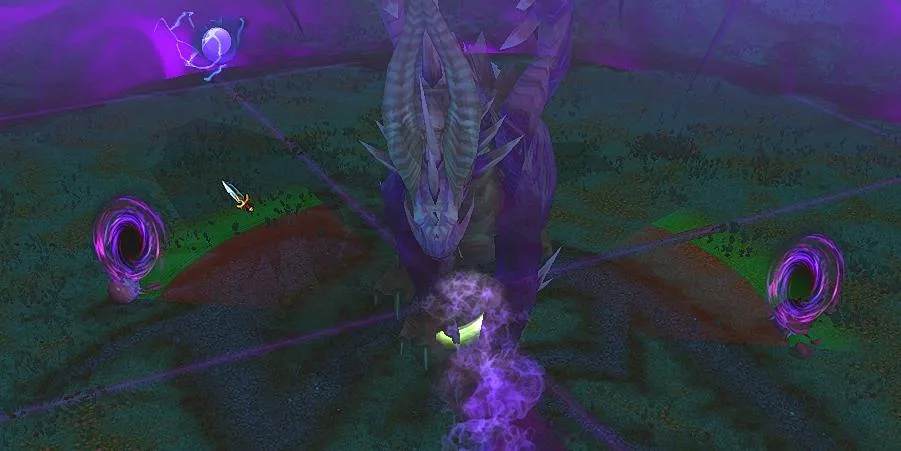
Halion: pre-cutter and guide
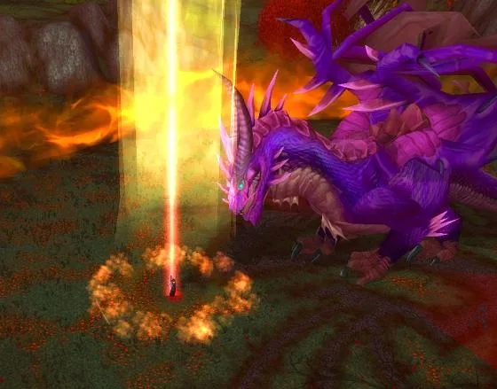
Halion: Meteor Strike
Obsidian Sanctum and Eye of Eternity
Sartharion: Lava Strike.
Malygos: Arcane Breath.
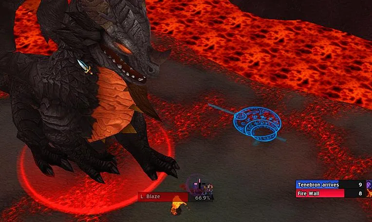
Sartharion: Lava Strike
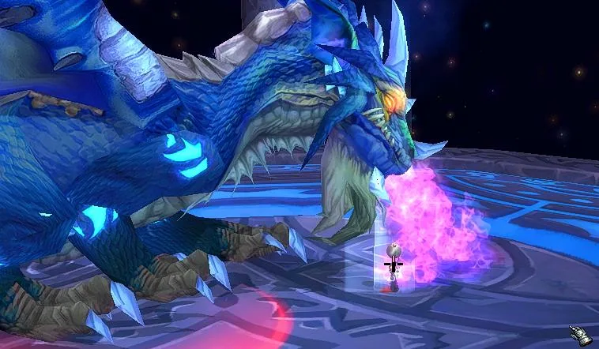
Malygos: Arcane Breath
Trial of the Crusader
Jaraxxus: Legion Flame.
Faction Champions: bigger models for melee, medium for dangerous casters, small for healers.
Twin Val'kyr: Light and Dark Vortex (pre-cast), Light and Dark Shields (cast).
Anub'arak: Shadow Strike, Submerge and Pursued.
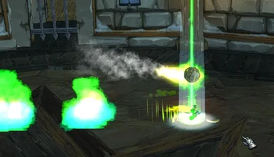
Jaraxxus: Legion Flame
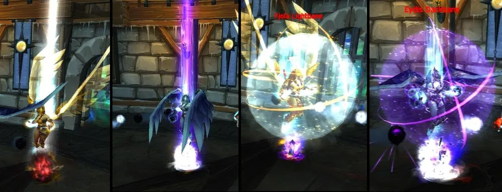
Twin Val'kyr: vortexes and shields
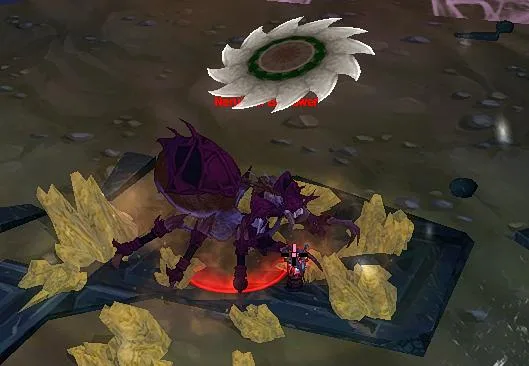
Anub'arak: Submerge
Ulduar
Flame Leviathan, XT-002: turrets, Flame Vents, Searing Light and Gravity Bomb.
Assembly of Iron: Rune of Power reverted, Overload circle fixed at 20 yards, Fusion Punch max size fixed.
Kologarn: boss size reduced from 100% to 85%.
Mimiron: Proximity Mines, Frost Bomb, Rocket Strike, size reduced to 80%.
Freya: Healthy Spore circle, Unstable Energy, Nature's Fury, Nature Bomb, and a Trash Hurricane that no longer looks like a druid's.
Thorim: Charge Orb, Lightning Charge, and snow on the ground for Blizzard.
Hodir: golden Flash Freeze pre-cast with a new platform model, Toasty Fire, Storm Power and Starlight.
Vezax: Mark of the Faceless, boss and big adds reduced to 85%.
Yogg-Saron: portal numbers, Cloud and Summon Guardian (green and circled when untouchable, red when active), Malady of the Mind.
Algalon: Cosmic Smash and Big Bang.
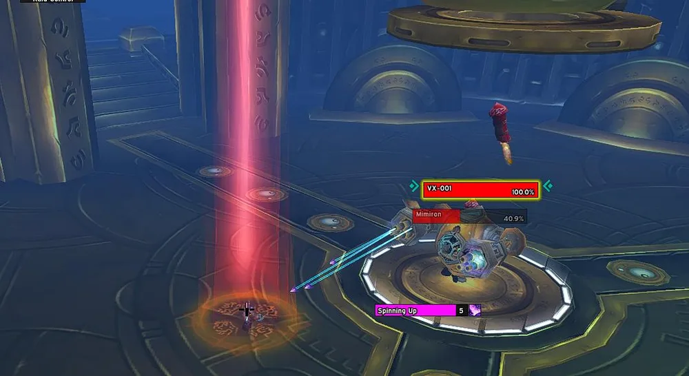
Mimiron: Rocket Strike
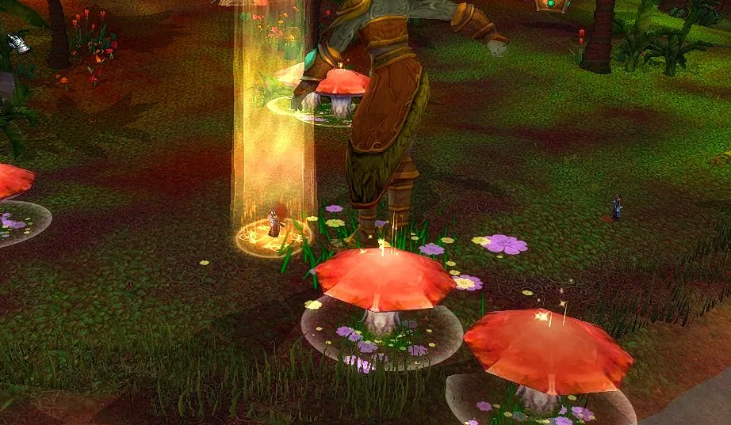
Freya: Healthy Spore
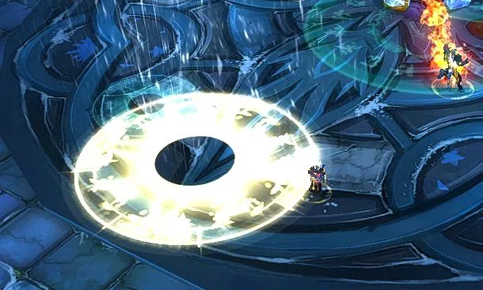
Hodir: Flash Freeze
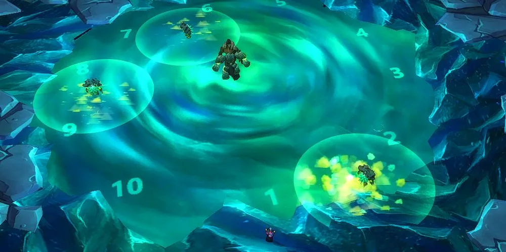
Yogg-Saron: portal numbers
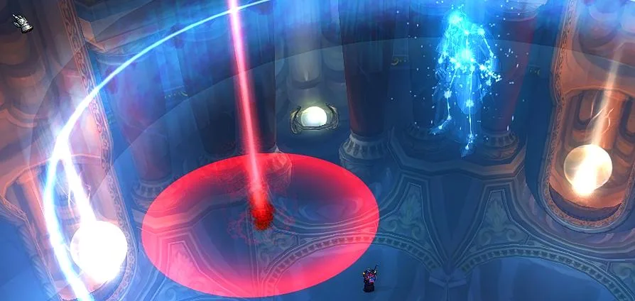
Algalon: Cosmic Smash
Icecrown Citadel
Lady Deathwisper: Summon Spirits redesign, Necrotic Strike (the player is no longer green).
Trash mobs: Blighted Abomination spell fix, Blood Prince Council trash chains, more visible Frozen Orb from the Ymirjar Frostbinder.
Festergut: Gas Spore range. You do not need to stack, just be inside the green circle to get Inoculated.
Professor Putricide: cleaner Malleable Goo animation.
Blood-Queen Lana'thel: Swarming Shadows, brighter for players using low settings.
Sindragosa: more visible Frost Bomb.
Lich King: Ice Pulse final version. Do not stand near other players, and respect the red circle.
NPCs: bigger Jeeves, Scrapbot and Darkfallen Commander, Darnavan no longer fails the quest, and a bonfire twice as big (needed for Hodir's Toasty Fire).
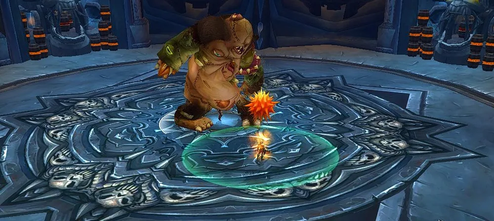
Festergut: stay inside the green circle
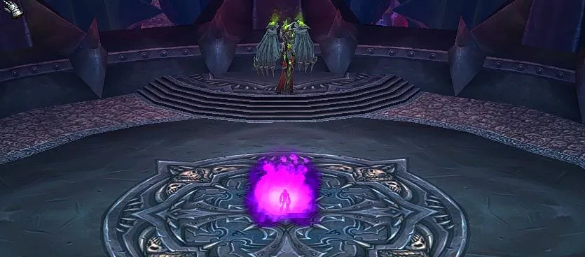
Blood-Queen: Swarming Shadows
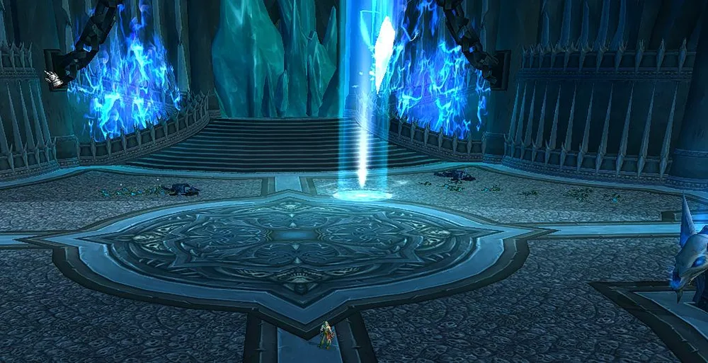
Sindragosa: Frost Bomb
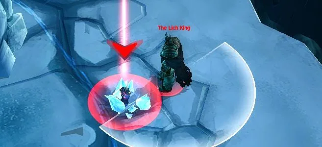
Lich King: Ice Pulse
Other changes
Mana Tide has a new form while active, Divine Hymn and Hymn of Hope are bigger so they are visible everywhere in a boss fight.
Deterrence and Shield Block show a gold shield in front of the player.
Frost Trap and Explosive Trap have a new active texture.
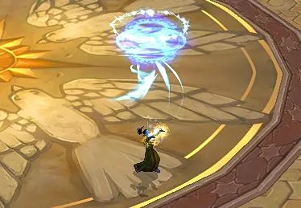
Divine Hymn: bigger
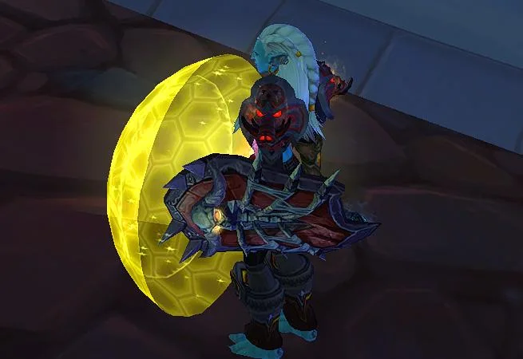
Deterrence: gold shield
Credits and sources
Patch Y was created by Andre and is now maintained by Lau. Halion models by Dribble. Manual screenshots by Andre.